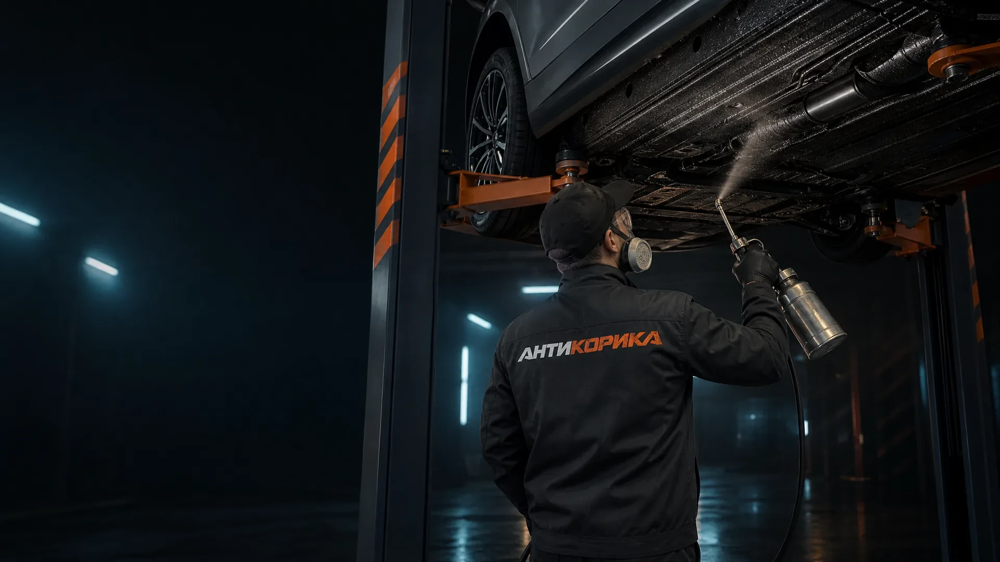
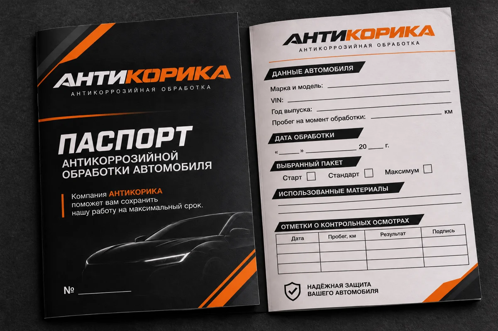

Защита от ржавчины
Предотвращаем коррозию и продлеваем срок службы кузова.
Открываемся [ВСТАВКА В-65: дата открытия бокса — от Артёма] — записываем на первые дни работы

Антикоррозийная обработка автомобиля в Москве
Скидка 10% новым клиентам
до 31 декабря
Письменная гарантия 7 летс паспортом обработки · подробнее
Фотоотчёт работКаждый этап отправляем в мессенджер
7 постовкаждый день 9:00–21:00
Предотвращаем коррозию и продлеваем срок службы кузова.
Защищённый автомобиль дороже при перепродаже.
Обрабатываем труднодоступные места кузова.
Проверенные материалы: Noxudol, Tekko, Dinitrol.
Сколько это стоит для вашей машины — покажем по марке и модели.
Рассчитать ценуЦена четырёх пакетов — сразу, без телефона.
Пример: [ВСТАВКА В-38: цена пакета по классу — прайс от Артёма]
Этапы — от осмотра на подъёмнике до выдачи машины.
Слева — металл после нескольких зим с реагентами, справа — после обработки. Потяните ползунок.


Три шага, без телефона. Расчётом можно поделиться ссылкой.
Начните вводить: Haval, Lada, Geely…
Модели нет в списке? Нажмите «Моей модели нет»
Шумопоглощающий состав на арках. Добавляется к пакетам Стандарт, Антишум и Цинк [ВСТАВКА В-23: чем отличается от «Антишума» — согласовать с Артёмом]
К пакету «Минимум» арки не входят, поэтому переключатель выключен.
Цена зависит от размера машины и пакета.
Окончательную цену фиксируем после осмотра машины. Что может её изменить — в калькуляторе под итогом.
Задайте их нам или кому угодно. Наши ответы — в последней колонке.Задайте эти вопросы перед оплатой. Ниже — наши ответы.
| Что проверить | Почему это важно | |
|---|---|---|
| Видна ли цена для вашей модели до звонка? | Почему это важноИначе сравнивать нечего | Да, в калькуляторе · открыть |
| Цена окончательная или «от»? | Почему это важно«Базовая» цена нередко меняется после осмотра | Одна цена для модели и пакета; что может её изменить — написано под ней |
| Когда цена становится окончательной? | Почему это важноЧтобы не было доплат после работы | После осмотра, до начала работ, в заказ-наряде |
| Что входит в пакет — по пунктам? | Почему это важноПакеты с одинаковым названием у разных центров отличаются составом | Список работ и зон в каждом пакете · смотреть |
| Какие составы наносят на днище и в полости? | Почему это важноСостав определяет защиту и запах | [ВСТАВКА В-13: материалы — от Артёма] — название в каждом пакете |
| Какой срок гарантии и что она покрывает? | Почему это важно«Гарантия N лет» без условий мало что значит | 7 лет на покрытие в обработанных зонах, условия · смотреть |
| Что нужно делать, чтобы гарантия сохранилась? | Почему это важноЧастое условие — ежегодный осмотр | Осмотр раз в год в нашем боксе — [ВСТАВКА В-45: цена осмотра — у Артёма] [ВСТАВКА В-44: согласовать с Артёмом] |
| Сколько держится запах и что с ним делать? | Почему это важноЧастый вопрос после антикора | В зависимости от состава запах держится от [ВСТАВКА В-19: N — после выбора состава Артёмом] до [ВСТАВКА В-19: M] дней · смотреть |
| Сколько машин обрабатывают одновременно и сколько ждать записи? | Почему это важноОт этого зависит, сколько времени уделят вашей | 7 постов, одна машина на пост в день · смотреть |
После обработки выдаём паспорт антикоррозийной защиты автомобиля. В нём фиксируем данные машины, дату обработки, выбранный пакет и использованные материалы.

На контрольных осмотрах в паспорт вносим дату, пробег, результат проверки и подпись специалиста. Это помогает следить за состоянием покрытия и своевременно подновлять защиту, чтобы она служила максимально долго.
7 лет со дня выдачи машины [ВСТАВКА В-40: согласовать с Артёмом], в зонах, которые мы обработали. Они записаны в заказ-наряде.
Такой участок обработаем заново за наш счёт [ВСТАВКА В-41: согласовать с Артёмом].
Заметили отслоение или ржавчину в обработанной зоне — позвоните или напишите в Telegram или Max [ВСТАВКА В-47: контакты для обращений по гарантии — от Артёма]. Привезите машину с талоном: осмотрим в течение [ВСТАВКА В-48: N дней на осмотр — согласовать с Артёмом] дней [ВСТАВКА В-48: согласовать с Артёмом] и в течение [ВСТАВКА В-49: N дней на письменный ответ — согласовать с Артёмом] дней письменно ответим, гарантийный ли это случай [ВСТАВКА В-49: согласовать с Артёмом].
Для машин старше [ВСТАВКА В-50: N лет — условия для старых машин — от Артёма] лет — [ВСТАВКА В-50: условия — от Артёма]
Читать условия полностьюЧетыре вопроса — подскажем пакет и цену для вашей машины.
Запах возможен. В зависимости от состава запах держится от [ВСТАВКА В-19: N — после выбора состава Артёмом] до [ВСТАВКА В-19: M] дней. Первые дни проветривайте салон и не оставляйте машину надолго в закрытом гараже. Если пахнет дольше — приезжайте, посмотрим.
Перед работой показываем список зон для вашей машины.
На одном посту — одна машина на весь день: 7 постов, [ВСТАВКА В-10: N машин в день — от Артёма] машин в день. Спешить, чтобы освободить место, не нужно. [ВСТАВКА В-21: формулировка уточняется — от Артёма]
[ВСТАВКА В-09: ближайшая свободная дата — в форме записи / обычно через N дней — от Артёма]. 7 постов, работаем каждый день с 9:00 до 21:00.
Закрываем [ВСТАВКА В-18: тормозные механизмы, штоки амортизаторов, датчики — по техкарте Артёма]
[ВСТАВКА В-11: N часов — от Артёма] часов. Машину [ВСТАВКА В-12: оставляете утром — забираете вечером того же дня — от Артёма] [ВСТАВКА В-12: подтвердить у Артёма].
[ВСТАВКА В-27: Нет, мойка днища входит в пакет / Да, ... — ответ Артёма] [ВСТАВКА В-27: в этапах работ и в составе пакетов написано «моем и сушим» — ответ должен совпасть]
Заводская защита обычно закрывает не все зоны: скрытые полости и швы часто остаются без состава. Покажем на подъёмнике, что есть на вашей машине, — тогда решите. [ВСТАВКА В-25: формулировка уточняется — от Артёма]
[ВСТАВКА В-32: ответ — только после проверки у дилеров; до этого вопрос не публикуем]
Да, если металл не сгнил насквозь: очаги зачищаем и обрабатываем до нанесения состава. Если нужна сварка — скажем на осмотре, обработку в таком месте не делаем. [ВСТАВКА В-28: подтвердить у Артёма]
[ВСТАВКА В-29: раз в N лет / осмотр раз в год — от Артёма] [ВСТАВКА В-29: по техкарте Артёма]
[ВСТАВКА В-30: что делаем с батареей и проводкой; если не берёте — так и написать — ответ Артёма]
[ВСТАВКА В-31: наличные / карта / QR / безнал для юрлиц — от Артёма]
[ВСТАВКА В-02: адрес — от Артёма], [ВСТАВКА В-03: как проехать: метро, въезд, парковка — от Артёма]. Каждый день с 9:00 до 21:00.
[ВСТАВКА В-04: телефон — от Артёма]
 Написать в Telegram
Написать в Telegram  Написать в Max
Написать в Max